3 ggplot (continuación)
3.1 De barras a pirámides
Si quisiéramos ver el mismo gráfico que antes, pero separado por sexo, podemos usar las opciones de faceting :
g_ned_sexo <- eder_ned_sexo_long %>%
ggplot(aes(x = e_nivel_desc, y = n, fill = e_nivel_desc))+
geom_col()+
coord_flip() +
scale_y_continuous(labels = abs) +
labs(y = "n",
x = "Nivel educativo",
title = "Poblacion por sexo y nivel educativo",
subtitle = "EDER CABA",
caption = "Fuente: en base a IDECBA",
fill = "Nivel educativo") +
theme_dark() +
facet_grid(rows = vars(Sexo)) # o cols?
g_ned_sexo
¿Podríamos mostrar las distribuciones al interior del total? ¡Claro!
g_ned_sexo_stack <- eder_ned_sexo_long %>%
ggplot(aes(x = Sexo, y = n, fill = e_nivel_desc))+
geom_col(stat = "identity")+ # con este parámetro, se apilan
scale_y_continuous(labels = abs) +
labs(y = "n",
x = "Sexo",
title = "Poblacion por sexo y nivel educativo",
subtitle = "EDER CABA",
caption = "Fuente: en base a IDECBA",
fill = "") +
theme_bw()
g_ned_sexo_stack
Quizás si fuera un gráfico interactivo… Un bonus track utilzando plotly:
#install.packages("plotly")
library(plotly)
g_ned_sexo_plotly <- ggplotly(g_ned_sexo_stack + aes(text = n), tooltip= "text")
g_ned_sexo_plotlyObtengamos la población censal de los dos últimos censos a nivel
nacional, disponible en el archivo “pob_censo2010y2022.xlsx”. Vamos a
armar, paso a paso, la pirámide del censo 2022, empezando por factorizar
la variable Edad para que quede ordenada.
N_Censo <- N_Censo %>%
mutate(Edad = factor(Edad,
levels = c("Total",
"0-4",
"5-9",
"10-14",
"15-19",
"20-24",
"25-29",
"30-34",
"35-39",
"40-44",
"45-49",
"50-54",
"55-59",
"60-64",
"65-69",
"70-74",
"75-79",
"80-84",
"85-89",
"90-94",
"95-99",
"100 y más")))Quedémonos con el año 2022 y la distribución por sexo y empecemos a graficar
N_Censo22 <- N_Censo %>%
filter(Anio == 2022,
Edad != "Total",
Sexo != "Total")
Pir_ER <- ggplot(data = N_Censo22,
aes(x = Edad, y = ifelse(Sexo == "Varon", -n, n),
fill = Sexo)) +
geom_bar(stat = "identity") # que ggplot no trate de contar cual histograma
Pir_ER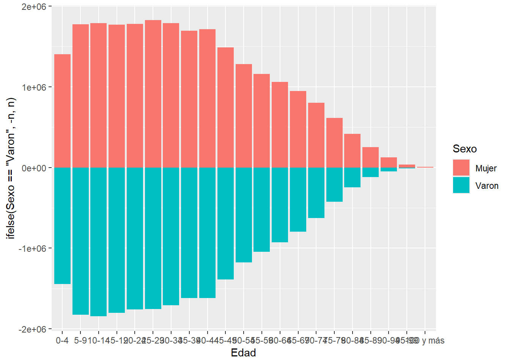
Hay que dar vuelta (flip) la pirámide. ¿Se acuerdan cómo? Podemos hacerle unos cambios adicionales de paso: fijar los límites horizontales y mostrar solo absolutos, incluir titulo, subtítulo y fuente, cambiar las etiquetas de ambos ejes, incluir un tema distinto y cambiar el color de las barras.
Pir_ER <- Pir_ER +
coord_flip() + # Volteamos la pirámide
scale_y_continuous(labels = abs # Que muestre absolutos (sin negativos)
) +
labs(y = "Población",
x = "Edad",
title = "Pirámide de población. Año 2022",
subtitle = "Total del país",
caption = "Fuente: en base a INDEC") +
scale_fill_manual(values = c("aquamarine4", "purple")) + # Defino los colores del parámetro fill (Sexo)
theme_bw()
Pir_ER 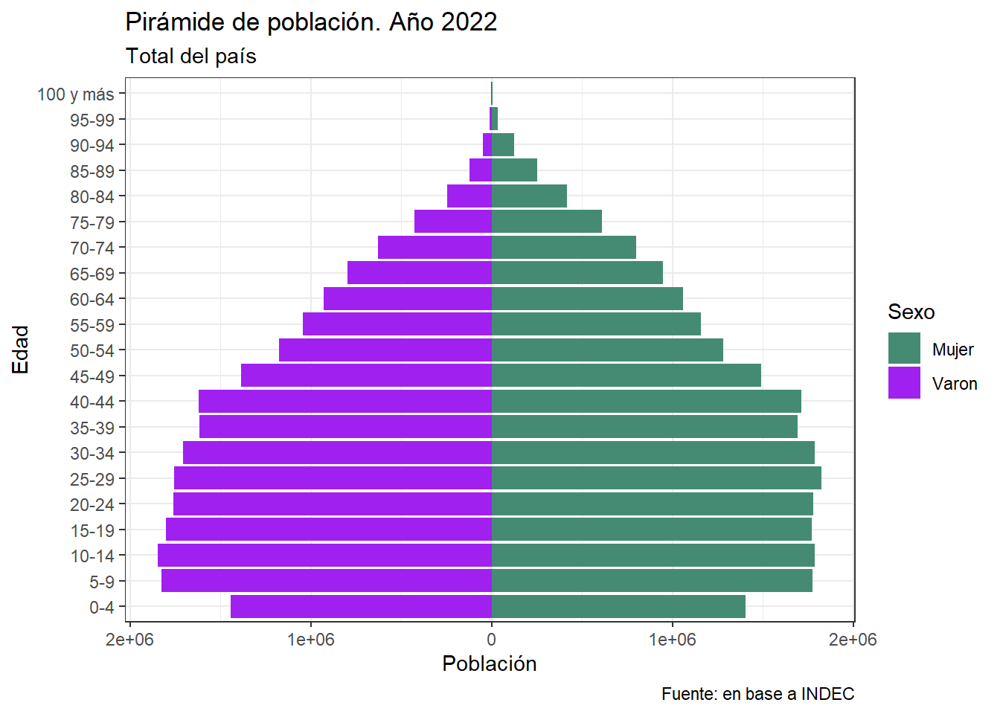
Probablemente querramos comparar años. Volvamos a utilizar el
data.frame de los 2 años.
Pirs <- N_Censo %>%
filter(Edad != "Total",
Sexo != "Total") %>%
ggplot(aes(x = Edad, y = ifelse(Sexo == "Varon", -n, n), fill = Sexo)) +
geom_bar(stat = "identity") +
coord_flip() +
scale_y_continuous(labels = abs) +
labs(y = "Población", x = "Edad") +
labs(title = "Pirámide de población.",
subtitle = "Años 2010 y 2022",
caption = "Fuente: INDEC") +
scale_fill_manual(values = c("aquamarine4", "purple")) +
theme_grey() +
facet_grid(rows = vars(Anio)) # o cols?
Pirs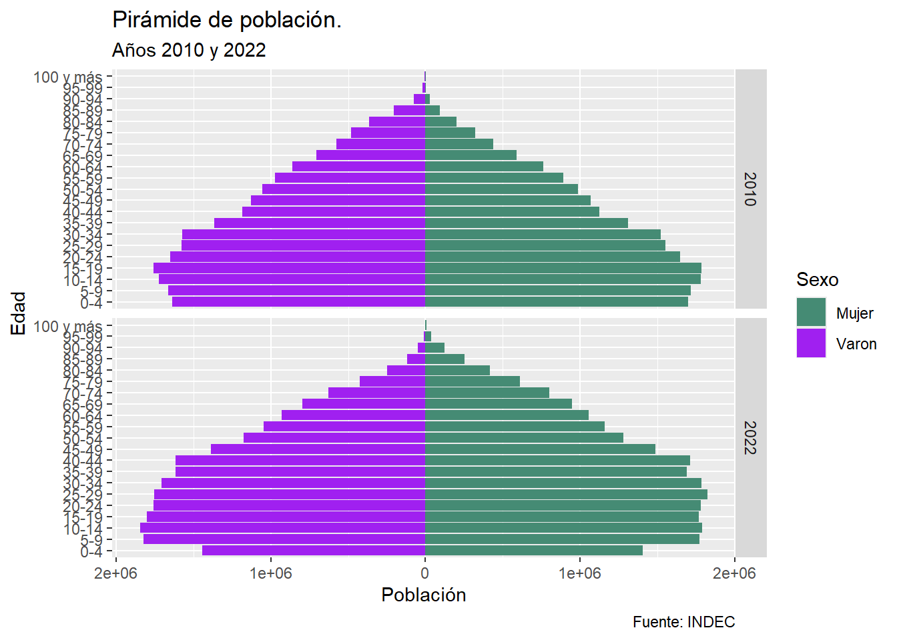
Utilicé dos veces labs! Es posible porque ggplot funciona sumando
elementos. ¿El gráfico nos permite inferir estadíos transicionales?
Mmm… Deberíamos verlo en porcentajes. Todo en una sentencia:
PirsPorc <- N_Censo %>%
filter(Edad != "Total",
Sexo != "Total") %>%
group_by(Anio, Sexo) %>%
mutate(np = round(n/sum(n)*100,2))%>%
ggplot() +
aes(x = Edad, y = ifelse(Sexo == "Varon", -np, np), fill = Sexo) +
geom_bar(stat = "identity") +
coord_flip() +
scale_y_continuous(labels = abs) +
labs(y = "Porcentaje de población", x = "Edad",
title = "Pirámide de población.",
subtitle = "Años 2010 y 2022",
caption = "Fuente: INDEC") +
theme_bw() +
scale_fill_manual(values =c("aquamarine4", "purple"))+
facet_grid(cols = vars(Anio))
PirsPorc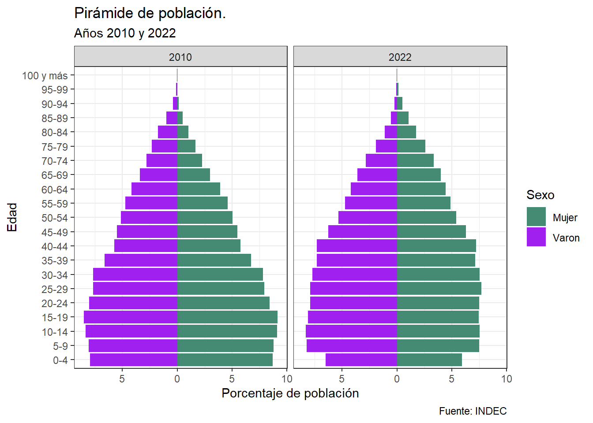
Podemos aprovechar la diferencia entre fill y color para poner una
encima de la otra, pero tenemos que transformar los años a columnas
N_Censo_p <- N_Censo %>%
filter(Edad != "Total",
Sexo != "Total") %>%
group_by(Anio, Sexo) %>%
mutate(np = round(n/sum(n)*100,2))%>%
select(-n) %>%
pivot_wider(names_from = Anio,
values_from = np)
Pir_Sup <- N_Censo_p %>%
ggplot() +
aes(x = Edad, y = ifelse(Sexo == "Varon", -`2022`, `2022`)) +
geom_bar(aes(fill = Sexo),
stat = "identity",
alpha = .7) +
geom_bar(aes(y = ifelse(Sexo == "Varon", -`2010`, `2010`),
color = Sexo),
stat = "identity",
linewidth = 1,
fill = "transparent") +
coord_flip() +
scale_y_continuous(labels = abs) +
labs(y = "Porcentaje de población", x = "Edad",
title = "Pirámide de población.",
subtitle = "Años 2010 y 2022",
caption = "Fuente: INDEC") +
theme_bw() +
scale_fill_manual(values =c("aquamarine4", "purple"), name = "2022")+
scale_color_manual(values =c("aquamarine", "magenta"), name = "2010")
Pir_Sup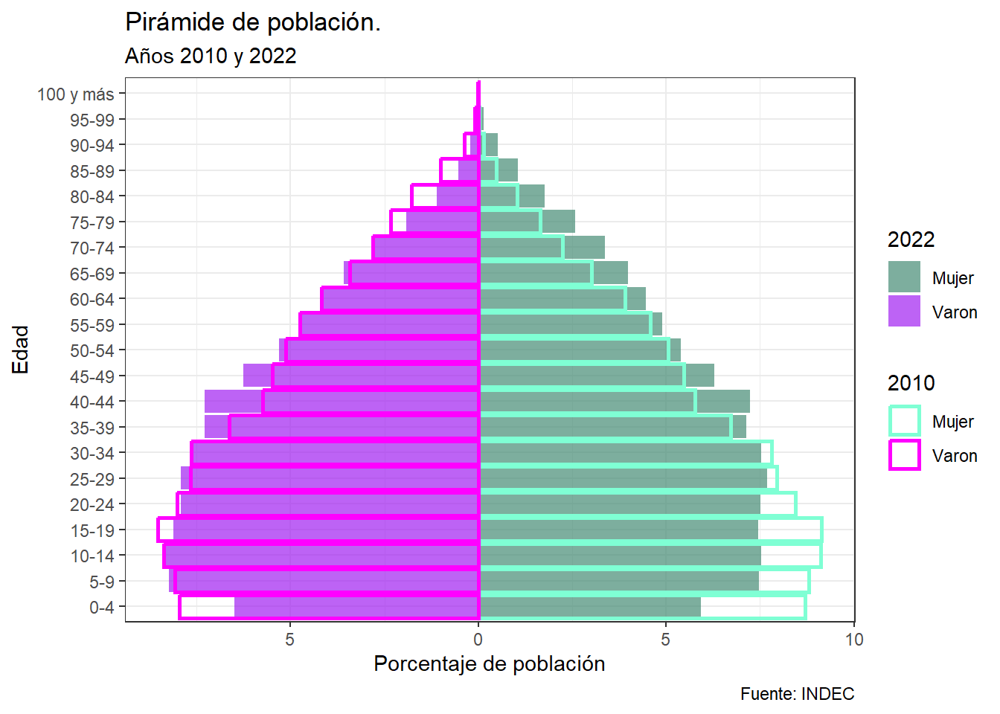
¡Ahora sí! Estamos en condiciones de percibir visualmente qué nos dice el stock por edad y sexo: envejecimiento, efecto migratorio, patrones de declaración censal de edad. ¿Qué más?
3.2 Lexis
Gráfico útil para representar la dinámica poblacional de ingreso y
permanencia en un estadío demográfico según edad, tiempo calendario (o
período) y año de nacimiento (o cohorte). Su aplicación más común es en
mortalidad, pero es generalizable a la relación exposición~evento con
múltiples
usos.
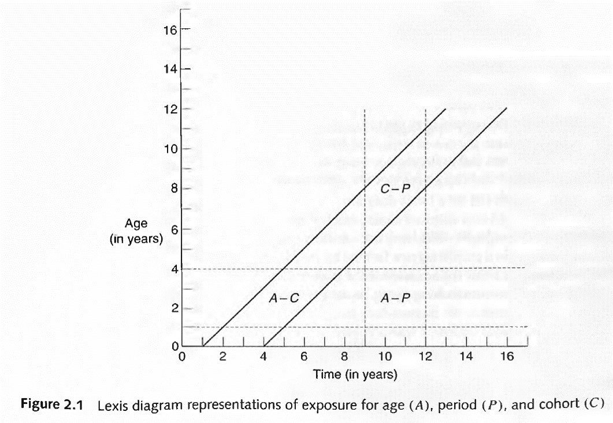
Los elementos principales de análisis son:
- Líneas de vida (45°)
- Segmentos horizontales y verticales
- Superficies
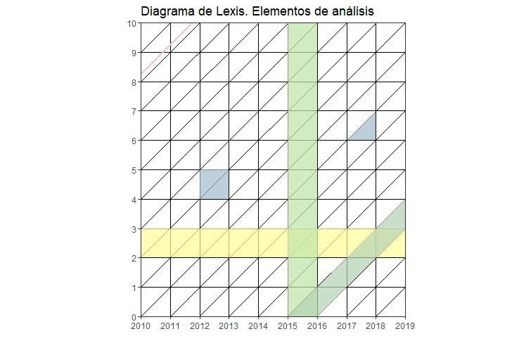
Ejemplo de uso del diagrama utilizando R:
- Mortalidad por conflictos armados (replicable):
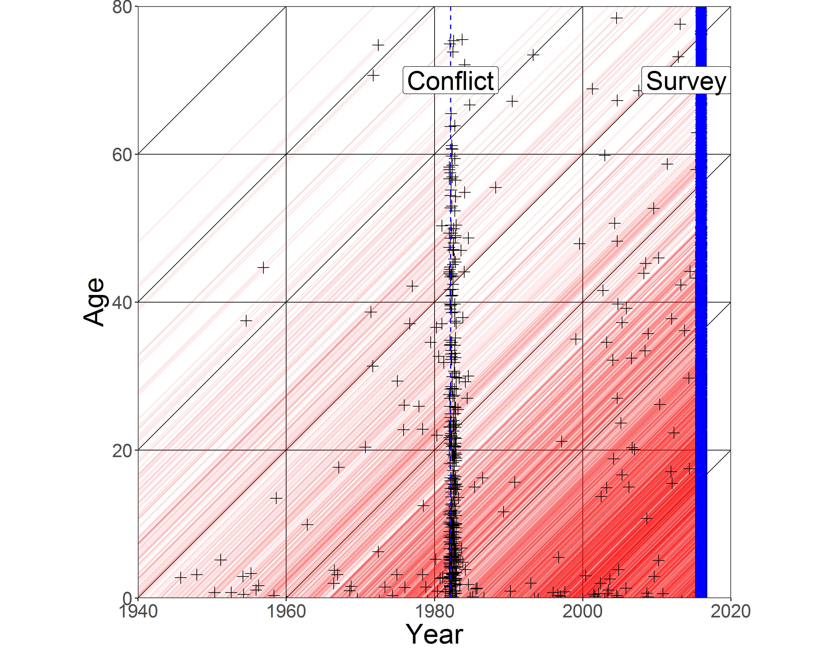
Fuente: Alburez et. al (2019)
Construyamos el diagrama básico del inicio. Para eso haremos uso del paquete LexisPlotR creado por Philipp Ottolinger (gracias Otto). Construyó un set de funciones basadas en ggplot que facilita la creación de diagramas haciéndolo un ejercicio intuitivo.
# Si el paquete no está disponible en CRAN, podemos instalarlo desde GitHub
# install.packages("devtools")
# devtools::install_github("ottlngr/LexisPlotR")
library(LexisPlotR) # Paquete específico para construir diagramas de Lexis
library(tidyverse) # Para manipular datos y utilizar funciones de ggplot2
# 1. Creamos el objeto "mylexis", que define el marco temporal del diagrama.
# En este caso: años calendario 2010-2019 y edades 0-10 años.
# Podríamos especificar un “delta” si quisiéramos mostrar grupos quinquenales, por ejemplo.
mylexis <- lexis_grid(year_start = 2010, year_end = 2019,
age_start = 0, age_end = 10)
# 2. Elementos básicos
# Resaltamos una edad específica: 2 años
mylexis <- lexis_age(lg = mylexis, age = 2)
# Resaltamos un año calendario: 2015
mylexis <- lexis_year(lg = mylexis, year = 2015, fill = "grey")
# Resaltamos la cohorte de 2015 (línea diagonal)
mylexis <- lexis_cohort(lg = mylexis, cohort = 2015)
# Una línea de vida, ¡elemento fundamental del diagrama!
#Representa cómo aumenta la edad con el paso de los años calendario
mylexis <- lexis_lifeline(lg = mylexis, birth = "2001-09-23",
lwd = 1, colour = "pink")
# Al ser un objeto ggplot, podemos incorporarle atributos, como el título o etiquetas
mylexis <- mylexis + labs(x = "Año",
y = "Edad",
title = "Diagrama de Lexis. Elementos de análisis")
# 3. Polígonos: cuadrado y triángulo
# Para crear polígonos, el autor se basa en la geometría "geom_polygon". Creamos un cuadrado.
#El orden de los datos es importante. Además podemos crear muchos polígonos al mismo tiempo señalando los grupos.
# Ejemplo: creamos un cuadrado que abarca entre los años 2012 y 2013, y edades 4 a 5.
square <- data.frame(
group = c(1, 1, 1, 1),
x = c("2012-01-01", "2012-01-01", "2013-01-01", "2013-01-01"),
y = c(4, 5, 5, 4)
)
# Lo agregamos al diagrama
mylexis <- lexis_polygon(lg = mylexis,
x = square$x, y = square$y,
group = square$group)
# Creamos el triángulo. ¿A qué refiere?
triangle <- data.frame(
group = c(1, 1, 1),
x = c("2017-01-01", "2018-01-01", "2018-01-01"),
y = c(6, 6, 7)
)
mylexis <- lexis_polygon(lg = mylexis,
x = triangle$x, y = triangle$y,
group = triangle$group)
# Imprimimos!
mylexis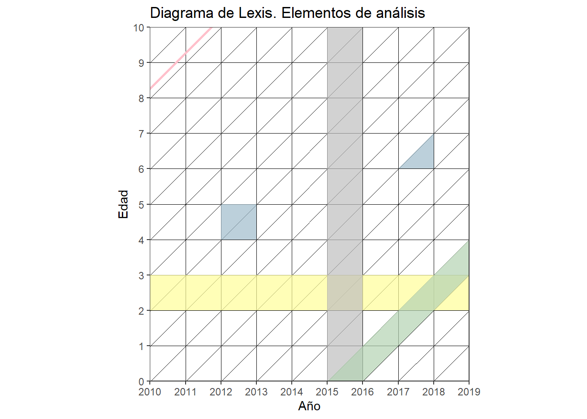
Adicionalmente, si trabajamos con población donde la exposición puede ser truncada (por derecha o izquierda), podemos graficar líneas de vida que respeten ese comportamiento. También podemos señalar con una cruz la ocurrencia del evento de salida que se estudia.
# Ejemplo: trayectoria educativa en el diagrama de Lexis
# ingresa al estudio sobre deserción escolar en el año 2012 un niño/a nacido en el año 2005, #abandonando el colegio a los 9 años de edad:
mylexis <- lexis_lifeline(lg = mylexis,
birth = "2005-09-23", # fecha de nacimiento
entry = "2012-06-11", # fecha en que entra al estudio (inicio del seguimiento)
exit = "2015-02-27", # fecha en que deja de ser observado (abandono)
lineends = TRUE, # agrega marcas visibles en los extremos de la línea
colour = "red") # color de la línea
mylexis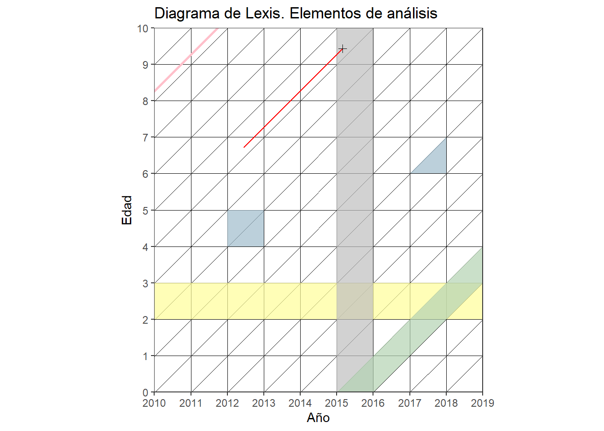
Para incluir triángulos y cuadriláteros se utiliza geom_polygon. Para dar superficie se utiliza geom_tile. Para esto último un gran tutorial de Tim Riffe.
3.2.1 Actividad
Crear un diagrama de Lexis e incluir en distintos colores líneas de vida de las 3 personas más jóvenes que conozcas.
Agregar 2 líneas de vida truncadas: simular la trayectoria de 2 personas que ingresan y salen de un estudio en distintos momentos.
Resaltar un año y una cohorte (usando lexis_year y lexis_cohort)
3.2.2 BONUS
Detrás de Lexis está ggplot!
ggplot() +
geom_segment(aes(x = 2011, y = 5, xend = 2015, yend = 9), color = "red", size=1)+
geom_point(aes(x=2015, y=9),shape=4,size=2,col=4)+ # Agrega un punto al final del segmento (año 2015, edad 9)
coord_equal() + # Mantiene la misma escala en ambos ejes (aspecto cuadrado)
scale_x_continuous(breaks=2010:2020, expand = c(0,0)) +
scale_y_continuous(breaks=0:10, expand = c(0,0)) +
geom_vline(xintercept = 2010:2020, color="grey", size=.15, alpha = 0.8) +
geom_hline(yintercept = 0:10, color="grey", size=.15, alpha = 0.8) +
geom_abline(intercept = seq(-2020, -2000, by=1), slope = 1, color="grey", size=.15, alpha = 0.8)+
labs(x="Año", y="Edad",title = "Dieagrama de Lexis c/ ggplot")+
theme_minimal()+
# Elimina cuadrículas del panel y define fondo blanco
theme(panel.grid.major = element_line(colour = NA),
panel.grid.minor = element_line(colour = NA),
plot.background = element_rect(fill = "white",
colour = "transparent"))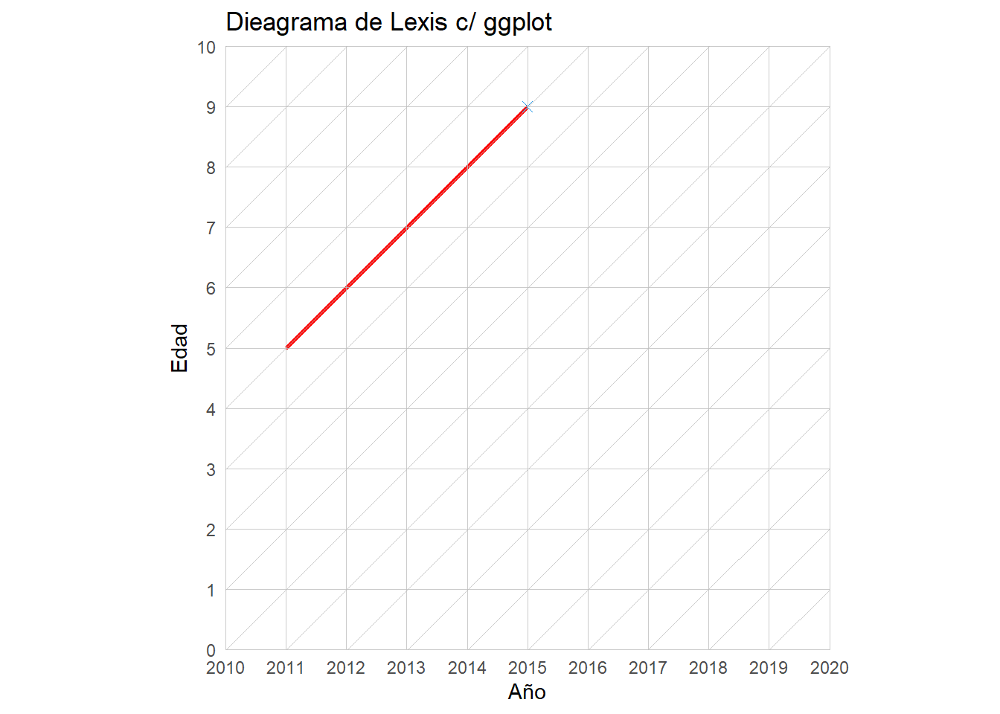
3.3 Mapas temáticos
Antes que nada, necesitamos descargar datos geográficos. Como fuente se
puede recurrir al Instituto Geográfico Nacional
(IGN)
y al INDEC, desde
donde se pueden descargar distinta info oficial y que están consistidas
entre sí. También necesitamos un paquete que pueda “manejar” este tipo
de datos: sf y su función para
leer: read_sf(), capaz de leer varios formatos de datos geográficos
(GeoJSON, shape, etc.).
# install.packages("sf")
library(sf)
ruta_completa <- normalizePath("data/capa_jurisdicciones.zip")
prov_shp <- st_read(paste0("/vsizip/", ruta_completa, "/jurisdicciones.shp"), quiet=T) #O se puede descargar y leer con st_read()
str(prov_shp)## Classes 'sf' and 'data.frame': 24 obs. of 8 variables:
## $ fid : int 1 2 3 4 5 6 7 8 9 10 ...
## $ id : num 3 17 21 23 14 5 26 6 11 22 ...
## $ cpr : chr "02" "58" "74" "82" ...
## $ fna : chr "Ciudad Autónoma de Buenos Aires" "Provincia del Neuquén" "Provincia de San Luis" "Provincia de Santa Fe" ...
## $ gna : chr "Ciudad Autónoma" "Provincia" "Provincia" "Provincia" ...
## $ nam : chr "Ciudad Autónoma de Buenos Aires" "Neuquén" "San Luis" "Santa Fe" ...
## $ sag : chr "IGN" "IGN" "IGN" "IGN" ...
## $ geometry:sfc_MULTIPOLYGON of length 24; first list element: List of 1
## ..$ :List of 1
## .. ..$ : num [1:1024, 1:2] -58.5 -58.5 -58.5 -58.5 -58.5 ...
## ..- attr(*, "class")= chr [1:3] "XY" "MULTIPOLYGON" "sfg"
## - attr(*, "sf_column")= chr "geometry"
## - attr(*, "agr")= Factor w/ 3 levels "constant","aggregate",..: NA NA NA NA NA NA NA
## ..- attr(*, "names")= chr [1:7] "fid" "id" "cpr" "fna" ...## fid id cpr fna
## Min. : 1.00 Min. : 3.00 Length:24 Length:24
## 1st Qu.: 6.75 1st Qu.: 8.75 Class :character Class :character
## Median :12.50 Median :14.50 Mode :character Mode :character
## Mean :12.50 Mean :14.50
## 3rd Qu.:18.25 3rd Qu.:20.25
## Max. :24.00 Max. :26.00
## gna nam sag geometry
## Length:24 Length:24 Length:24 MULTIPOLYGON :24
## Class :character Class :character Class :character epsg:4326 : 0
## Mode :character Mode :character Mode :character +proj=long...: 0
##
##
## 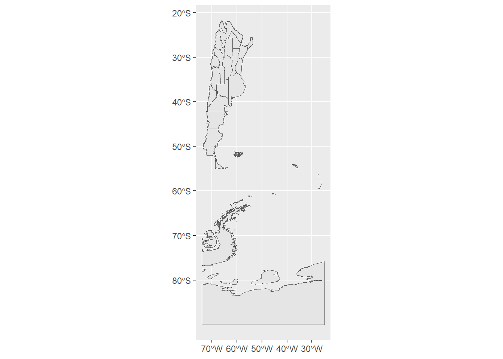
Podemos modificar cuánto vemos del mapa (los límites) para ajustarlo a nuestras necesidades. Por ejemplo, si quisiéramos centrarnos en las provincias y dejar de lado la Antártida. ¿Y agregar los nombres de las provincias, quizás?
prov_shp %>%
ggplot()+
geom_sf()+
geom_sf_text(aes(label = nam),
size = 2) +
coord_sf(xlim = c(-75, -52), # longitud
ylim = c(-22, -55)) + # latitud
theme_bw()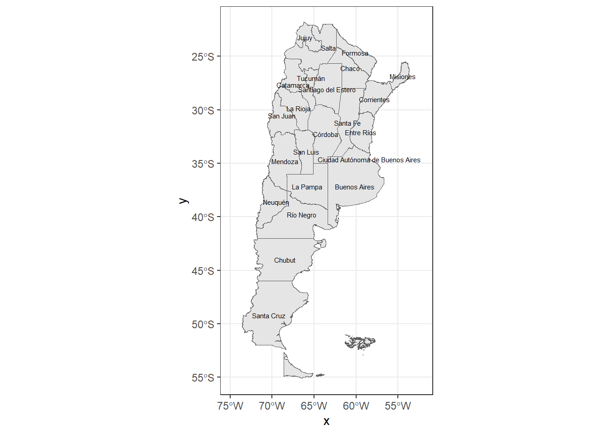
¿Y cómo hacemos para darle vida a este mapa? Primero, necesitamos datos
por provincia. Vamos a usar los datos de porcentaje de hogares
particulares sin acceso a la red de servicio cloacal, del censo 2022,
presentes en el archivo hog_cloaca2022.xlsx. Miremos un poco el
archivo
## cod Año Dominio.geográfico
## 1 02 2022 Ciudad Autónoma de Buenos Aires
## 2 06 2022 Buenos Aires
## 3 10 2022 Catamarca
## 4 14 2022 Córdoba
## 5 18 2022 Corrientes
## 6 22 2022 Chaco
## Indicadores
## 1 Porcentaje de hogares particulares sin acceso a la red de servicio cloacal
## 2 Porcentaje de hogares particulares sin acceso a la red de servicio cloacal
## 3 Porcentaje de hogares particulares sin acceso a la red de servicio cloacal
## 4 Porcentaje de hogares particulares sin acceso a la red de servicio cloacal
## 5 Porcentaje de hogares particulares sin acceso a la red de servicio cloacal
## 6 Porcentaje de hogares particulares sin acceso a la red de servicio cloacal
## Total
## 1 1.2
## 2 40.6
## 3 48.4
## 4 55.0
## 5 39.4
## 6 67.6## [1] "data.frame"## cod Año Dominio.geográfico Indicadores
## Length:24 Length:24 Length:24 Length:24
## Class :character Class :character Class :character Class :character
## Mode :character Mode :character Mode :character Mode :character
##
##
##
## Total
## Min. : 1.20
## 1st Qu.:25.82
## Median :36.45
## Mean :38.49
## 3rd Qu.:49.52
## Max. :74.60¿Qué cosas tenemos en común entre este data frame y el de datos
geográficos? Dos cosas: el nombre de la provincia y su código (pueden
ver los oficiales
acá).
Los códigos son muy útiles porque muchas instituciones los utilizan, y
es más probable que tengan menos diferencias que el nombre (mayúsculas,
“CABA” en vez de “Ciudad Autónoma de Buenos Aires”, etc). Entonces,
vamos a unirlo por código con left_join() aunque tengan nombre
distinto las variables:
## Simple feature collection with 6 features and 11 fields
## Geometry type: MULTIPOLYGON
## Dimension: XY
## Bounding box: xmin: -71.96569 ymin: -41.10059 xmax: -58.33515 ymax: -25.16831
## Geodetic CRS: WGS 84
## fid id cpr fna gna
## 1 1 3 02 Ciudad Autónoma de Buenos Aires Ciudad Autónoma
## 2 2 17 58 Provincia del Neuquén Provincia
## 3 3 21 74 Provincia de San Luis Provincia
## 4 4 23 82 Provincia de Santa Fe Provincia
## 5 5 14 46 Provincia de La Rioja Provincia
## 6 6 5 10 Provincia de Catamarca Provincia
## nam sag Año Dominio.geográfico
## 1 Ciudad Autónoma de Buenos Aires IGN 2022 Ciudad Autónoma de Buenos Aires
## 2 Neuquén IGN 2022 Neuquén
## 3 San Luis IGN 2022 San Luis
## 4 Santa Fe IGN 2022 Santa Fe
## 5 La Rioja IGN 2022 La Rioja
## 6 Catamarca IGN 2022 Catamarca
## Indicadores
## 1 Porcentaje de hogares particulares sin acceso a la red de servicio cloacal
## 2 Porcentaje de hogares particulares sin acceso a la red de servicio cloacal
## 3 Porcentaje de hogares particulares sin acceso a la red de servicio cloacal
## 4 Porcentaje de hogares particulares sin acceso a la red de servicio cloacal
## 5 Porcentaje de hogares particulares sin acceso a la red de servicio cloacal
## 6 Porcentaje de hogares particulares sin acceso a la red de servicio cloacal
## Total geometry
## 1 1.2 MULTIPOLYGON (((-58.45535 -...
## 2 24.4 MULTIPOLYGON (((-70.39341 -...
## 3 26.3 MULTIPOLYGON (((-67.05547 -...
## 4 40.5 MULTIPOLYGON (((-61.04639 -...
## 5 40.9 MULTIPOLYGON (((-68.52136 -...
## 6 48.4 MULTIPOLYGON (((-68.50537 -...Ahora, ¿cómo poner en color las provincias según el indicador? Primero,
quedémonos con las variables que nos interesan y luego grafiquemos:
acordémonos de aes()
hog_cloaca_geo <- hog_cloaca_geo %>%
select(nam, # Nombre
Año, # Año (aunque solo tenemos 2022)
Total, # Valor del indicador
geometry) # geometría
p_cloaca <- ggplot(hog_cloaca_geo)+
geom_sf(aes(fill = Total),
color = "grey90")+
coord_sf(xlim = c(-75, -52), # longitud
ylim = c(-22, -55))+ #latitud
theme_bw()
p_cloaca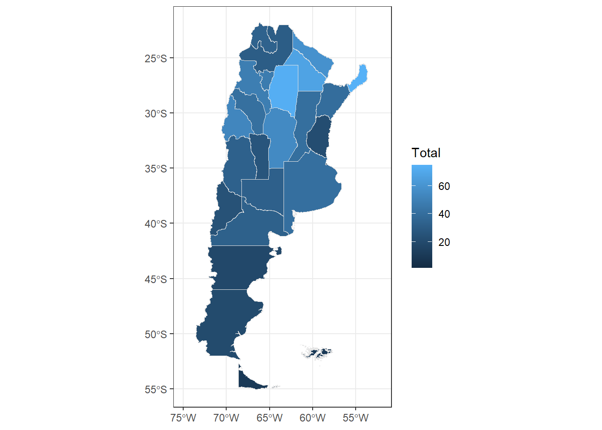
Pero la paleta de colores está rara. Vamos a ponerle otra y cambiar la dirección, para que más oscuro = más alto porcentaje de hogares sin cloaca. Y, de paso, agreguemos título y demás:
p_cloaca +
scale_fill_distiller("%",palette = "Reds",direction = 1)+
labs(title = "Porcentaje de hogares particulares \nsin acceso a la red de servicio cloacal",
subtitle = "Por provincia. Año 2022",
caption = "Fuente: INDEC") 
3.3.1 Actividad
Mapear un indicador a elección, puede ser a nivel de departamentos o de provincias, realizando la unión de data frames de la geometría y el indicador, e incluir título, subtítulo y fuente. Fuentes posibles de indicadores (no limitado):
- INDEC:
y muchos otros más
Y las fuentes de geometrías:
CABA - Comunas (descargar .zip con el shapefile o GeoJSON)
3.3.2 BONUS: otras funciones con mapas
En un mapa podemos superponer varias capas, igual que en cualquier gráfico de ggplot2. Por ejemplo, podemos sumar los centroides de las provincias para mostrar ubicaciones puntuales o etiquetas basadas en puntos.
Los centroides nos permiten:
ubicar puntos de referencia dentro de cada provincia,
colocar etiquetas de texto basadas en esos puntos,
comprender que un mapa no es una sola capa sino una composición de capas.
Antes de calcular centroides, es buena práctica corregir geometrías inválidas, porque algunos shapefiles contienen errores topológicos que impiden calcularlos correctamente.
# Corregimos geometrías inválidas y aseguramos que sean MULTIPOLYGON
prov_shp_fix <- st_make_valid(prov_shp)
prov_shp_fix <- st_cast(prov_shp_fix, "MULTIPOLYGON", warn = FALSE)
# Calculamos centroides seguros
prov_centroides <- st_centroid(prov_shp_fix)
# Graficamos: polígonos + centroides + etiquetas
ggplot() +
geom_sf(data = prov_shp_fix, fill = "white", color = "grey70") +
geom_sf(data = prov_centroides, color = "blue", size = 1) +
geom_sf_text(data = prov_centroides, aes(label = nam),
size = 2, nudge_y = 0.3) +
coord_sf(xlim = c(-75, -52),
ylim = c(-22, -55)) +
theme_bw() +
theme(
axis.title = element_blank()) +
labs(title = "Mapa con centroides de provincias",
subtitle= "Argentina",
caption = "Fuente: IGN / INDEC")
Este ejemplo muestra cómo combinar múltiples capas espaciales: polígonos + puntos + texto.
Además de definir una paleta de colores, podemos mejorar la estética general del mapa ajustando el tema, la leyenda y el nivel de detalle.
#Mapa con estilo minimalista
ggplot(hog_cloaca_geo) +
geom_sf(aes(fill = Total), color = "grey80") +
scale_fill_distiller("% hogares", palette = "Reds", direction = 1) +
coord_sf(xlim = c(-75, -52), ylim = c(-22, -55)) +
theme_void() +
labs(title = "Porcentaje de hogares particulares \nsin acceso a la red de servicio cloacal",
subtitle = "Por provincia. Año 2022",
caption = "Fuente: INDEC")
Ajustar la posición y el formato de la leyenda:
p_cloaca<-ggplot(hog_cloaca_geo) +
geom_sf(aes(fill = Total), color = "grey80") +
scale_fill_distiller("% hogares",
palette = "Reds",
direction = 1,
breaks = seq(0, 60, 10)) +
coord_sf(xlim = c(-75, -52), ylim = c(-22, -55)) +
theme_bw() +
theme(legend.position = "bottom") +
labs(title = "Porcentaje de hogares particulares \nsin acceso a la red de servicio cloacal",
subtitle = "Por provincia. Año 2022",
caption = "Fuente: INDEC")
p_cloaca
Por otro lado, en demografía se suele trabajar con indicadores agrupados por rangos, cuartiles o tipologías (variables discretas o categóricas). Para visualizar esto, podemos usar la función cut() y una escala de color diferente (scale_fill_brewer).
¡Veamos como hacerlo!
# Categorizar la variable 'Total' en 4 grupos (cuartiles o rangos manuales)
hog_cloaca_geo <- hog_cloaca_geo %>%
mutate(
nivel_cloaca = cut(
Total,
breaks = quantile(Total, na.rm = TRUE), # Define dónde se realizan los cortes
include.lowest = TRUE, #Asegura que el valor mínimo se incluya en el primer grupo
labels = c("Alto", "Medio", "Bajo", "Muy bajo") #Nombre de categorías
)
)
# Graficar con la nueva variable categórica
ggplot(hog_cloaca_geo) +
geom_sf(aes(fill = nivel_cloaca), color = "grey90") +
# Usamos scale_fill_brewer() para mapear la variable Categórica
scale_fill_brewer(
name = "% Hogares \ncon acceso a cloaca (Nivel)", # Nuevo título de leyenda
palette = "YlGnBu", # Paleta secuencial para datos discretos
) +
coord_sf(xlim = c(-75, -52), # longitud
ylim = c(-22, -55)) + # latitud
theme_bw() +
labs(
title = "Hogares particulares según nivel de acceso a \nla red de servicio cloacal",
subtitle = "Por provincia. Año 2022",
caption = "Fuente: INDEC")
3.4 Curvas Kaplan-Meier
En este ejemplo vamos a:
Simular tiempos de supervivencia con censura aleatoria.
Construir el objeto Surv() que indica tiempo observado + evento/censura.
Estimar la curva de supervivencia con Kaplan–Meier usando survfit().
Pasar los resultados a formato tidy para trabajar con ggplot2.
Graficar Kaplan–Meier con y sin estratos (ej. sexo).
Comparar curvas con el test log-rank
library(tidyverse)
library(survival)
#install.packages("survminer")
library(survminer) # opcional (gráficos bonitos)
set.seed(123) #garantiza la reproducibilidad en simulaciones
n <- 300Vamos a generar tres componentes fundamentales en un análisis de supervivencia:
-Tiempo “verdadero” hasta el evento: se simula a partir de una distribución exponencial.
-Tiempo de censura independiente: representa observaciones que no llegan a experimentar el evento durante el período de estudio.
-Tiempo observado: es el mínimo entre ambos, es decir, lo que realmente se puede observar en los datos.
# tiempo "verdadero"
tiempo <- rexp(n, rate = 0.1) #genera números aleatorios en una distribución exponencial
# censura independiente
cens <- rexp(n, rate = 0.05)
# tiempo observado
t_obs <- pmin(tiempo, cens) #devuelve el mínimo elemento a elemento entre dos (o más) vectoresUna vez simulados los tiempos, necesitamos definir:
-Un indicador de evento: toma valor 1 si el evento ocurrió antes que la censura, y 0 en caso contrario.
-Una covariable categórica (en este caso, sexo) para ilustrar cómo se comparan curvas de supervivencia entre grupos.
-El dataset final, donde reunimos toda la información necesaria para ajustar el modelo de Kaplan–Meier.
# indicador de evento (1 = evento, 0 = censura)
evento <- as.numeric(tiempo <= cens)
# covariable categórica
sexo <- sample(c("Hombre","Mujer"), size=n, replace=TRUE) #crea una muesta aleatoria
#armamos dataset final
datos <- tibble(
tiempo = t_obs,
evento = evento,
sexo = sexo
)Tibble!!!
El paquete tibble, que forma parte del entorno tidyverse, permite crear, manipular y visualizar tablas de datos con comportamientos más consistentes y mejorados respecto a los data frames tradicionales.. Ver más aquí.
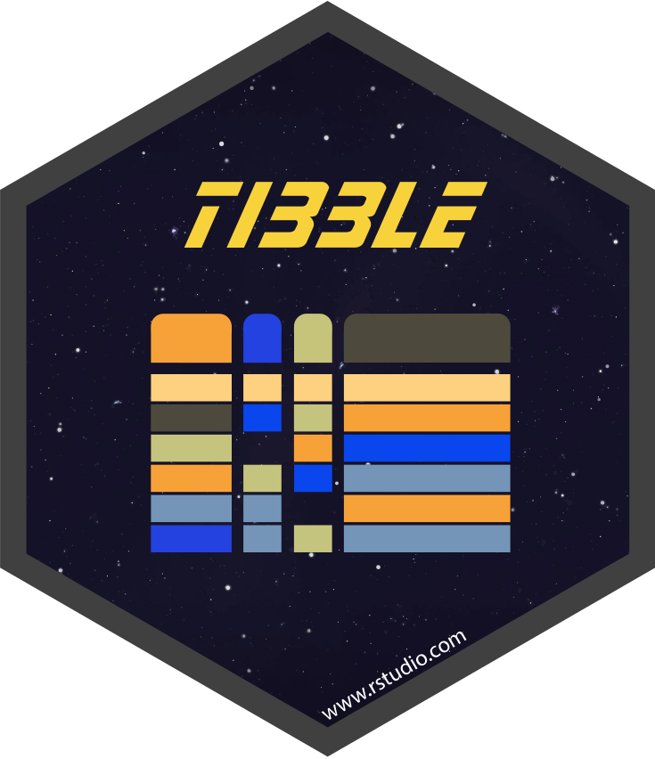
3.4.1 Estimación Kaplan–Meier
El estimador KM se aplica con la función survfit(), pero antes hay que crear un objeto Surv() que contiene el tiempo observado y el estado (evento o censura).
La fórmula ~ 1 indica que NO estamos estratificando por ninguna covariable.
## Call: survfit(formula = Surv(tiempo, evento) ~ 1, data = datos)
##
## time n.risk n.event survival std.err lower 95% CI upper 95% CI
## 0.0437 299 1 0.9967 0.00334 0.99013 1.0000
## 0.0460 298 1 0.9933 0.00471 0.98411 1.0000
## 0.0563 297 1 0.9900 0.00576 0.97873 1.0000
## 0.0790 296 1 0.9866 0.00664 0.97369 0.9997
## 0.2417 291 1 0.9832 0.00744 0.96876 0.9979
## 0.2915 290 1 0.9798 0.00815 0.96400 0.9959
## 0.3006 289 1 0.9765 0.00880 0.95936 0.9938
## 0.3158 288 1 0.9731 0.00940 0.95482 0.9917
## 0.3177 287 1 0.9697 0.00996 0.95035 0.9894
## 0.3289 285 1 0.9663 0.01049 0.94593 0.9870
## 0.3434 283 1 0.9629 0.01099 0.94155 0.9846
## 0.4209 281 1 0.9594 0.01147 0.93720 0.9822
## 0.4227 280 1 0.9560 0.01193 0.93289 0.9797
## 0.4765 277 1 0.9525 0.01238 0.92859 0.9771
## 0.5156 276 1 0.9491 0.01281 0.92433 0.9745
## 0.5621 274 1 0.9456 0.01322 0.92007 0.9719
## 0.5967 272 1 0.9422 0.01362 0.91584 0.9692
## 0.6214 270 1 0.9387 0.01401 0.91161 0.9665
## 0.6738 269 1 0.9352 0.01439 0.90740 0.9638
## 0.6865 268 1 0.9317 0.01475 0.90322 0.9611
## 0.7211 267 1 0.9282 0.01510 0.89907 0.9583
## 0.7498 266 1 0.9247 0.01544 0.89493 0.9555
## 0.7535 264 1 0.9212 0.01578 0.89080 0.9527
## 0.8025 262 1 0.9177 0.01610 0.88667 0.9498
## 0.8277 261 1 0.9142 0.01642 0.88255 0.9469
## 0.8416 260 1 0.9107 0.01673 0.87845 0.9440
## 0.9365 255 1 0.9071 0.01704 0.87429 0.9411
## 0.9857 254 1 0.9035 0.01734 0.87015 0.9382
## 0.9863 253 1 0.8999 0.01764 0.86603 0.9352
## 1.0193 251 1 0.8964 0.01793 0.86190 0.9322
## 1.1303 246 1 0.8927 0.01822 0.85770 0.9292
## 1.2844 242 1 0.8890 0.01852 0.85346 0.9261
## 1.4478 240 1 0.8853 0.01881 0.84922 0.9230
## 1.4527 239 1 0.8816 0.01909 0.84499 0.9198
## 1.4573 238 1 0.8779 0.01937 0.84077 0.9167
## 1.5304 235 1 0.8742 0.01964 0.83652 0.9135
## 1.5890 233 1 0.8704 0.01991 0.83226 0.9103
## 1.6774 232 1 0.8667 0.02018 0.82802 0.9071
## 1.6987 231 1 0.8629 0.02043 0.82379 0.9039
## 1.7829 230 1 0.8592 0.02069 0.81957 0.9007
## 1.8828 226 1 0.8554 0.02094 0.81529 0.8974
## 1.9004 225 1 0.8516 0.02119 0.81103 0.8941
## 1.9253 224 1 0.8478 0.02144 0.80678 0.8908
## 1.9583 222 1 0.8439 0.02168 0.80251 0.8875
## 1.9979 221 1 0.8401 0.02191 0.79826 0.8842
## 2.0996 218 1 0.8363 0.02215 0.79397 0.8808
## 2.1606 217 1 0.8324 0.02238 0.78970 0.8775
## 2.2300 213 1 0.8285 0.02261 0.78536 0.8740
## 2.2413 212 1 0.8246 0.02284 0.78103 0.8706
## 2.2554 211 1 0.8207 0.02306 0.77671 0.8672
## 2.3604 210 1 0.8168 0.02328 0.77241 0.8637
## 2.3659 209 1 0.8129 0.02350 0.76811 0.8603
## 2.3851 208 1 0.8090 0.02371 0.76382 0.8568
## 2.5834 205 1 0.8050 0.02392 0.75949 0.8533
## 2.5956 204 1 0.8011 0.02412 0.75517 0.8498
## 2.5995 203 1 0.7971 0.02433 0.75085 0.8463
## 2.6026 202 1 0.7932 0.02452 0.74655 0.8427
## 2.6611 200 1 0.7892 0.02472 0.74223 0.8392
## 2.7410 198 1 0.7852 0.02491 0.73789 0.8356
## 2.7425 197 1 0.7812 0.02510 0.73356 0.8320
## 2.8039 193 1 0.7772 0.02530 0.72917 0.8284
## 2.8101 192 1 0.7732 0.02549 0.72478 0.8248
## 2.8467 190 1 0.7691 0.02568 0.72037 0.8211
## 2.9579 188 1 0.7650 0.02586 0.71594 0.8174
## 2.9696 187 1 0.7609 0.02605 0.71153 0.8137
## 2.9997 186 1 0.7568 0.02623 0.70712 0.8100
## 3.0620 185 1 0.7527 0.02640 0.70271 0.8063
## 3.1352 184 1 0.7486 0.02657 0.69832 0.8026
## 3.1423 183 1 0.7445 0.02674 0.69393 0.7988
## 3.1650 182 1 0.7404 0.02691 0.68955 0.7951
## 3.1846 181 1 0.7364 0.02707 0.68518 0.7914
## 3.2464 180 1 0.7323 0.02722 0.68081 0.7876
## 3.4666 177 1 0.7281 0.02738 0.67639 0.7838
## 3.4875 176 1 0.7240 0.02754 0.67198 0.7800
## 3.5645 174 1 0.7198 0.02769 0.66755 0.7762
## 3.6158 172 1 0.7156 0.02784 0.66310 0.7724
## 3.7275 171 1 0.7115 0.02799 0.65866 0.7685
## 3.7549 169 1 0.7073 0.02814 0.65419 0.7646
## 3.7712 168 1 0.7030 0.02829 0.64973 0.7607
## 3.8001 167 1 0.6988 0.02843 0.64527 0.7568
## 3.9069 164 1 0.6946 0.02858 0.64076 0.7529
## 4.0171 163 1 0.6903 0.02872 0.63626 0.7490
## 4.0324 162 1 0.6860 0.02885 0.63177 0.7450
## 4.1658 161 1 0.6818 0.02899 0.62728 0.7410
## 4.2036 160 1 0.6775 0.02912 0.62279 0.7371
## 4.4911 157 1 0.6732 0.02925 0.61826 0.7331
## 4.5679 156 1 0.6689 0.02938 0.61372 0.7290
## 4.5878 154 1 0.6646 0.02951 0.60916 0.7250
## 4.6322 153 1 0.6602 0.02963 0.60461 0.7209
## 4.6342 152 1 0.6559 0.02975 0.60006 0.7169
## 4.6731 150 1 0.6515 0.02988 0.59549 0.7128
## 4.7037 149 1 0.6471 0.02999 0.59093 0.7087
## 4.7876 148 1 0.6427 0.03011 0.58637 0.7046
## 4.8067 147 1 0.6384 0.03022 0.58181 0.7004
## 4.9115 146 1 0.6340 0.03033 0.57727 0.6963
## 5.0662 144 1 0.6296 0.03043 0.57269 0.6922
## 5.1719 143 1 0.6252 0.03054 0.56812 0.6880
## 5.2280 141 1 0.6208 0.03064 0.56352 0.6838
## 5.3839 140 1 0.6163 0.03074 0.55893 0.6796
## 5.4067 137 1 0.6118 0.03084 0.55427 0.6754
## 5.5813 136 1 0.6073 0.03094 0.54961 0.6711
## 5.6459 135 1 0.6028 0.03104 0.54496 0.6668
## 5.6789 134 1 0.5983 0.03113 0.54032 0.6626
## 5.6915 132 1 0.5938 0.03123 0.53565 0.6583
## 5.7256 131 1 0.5893 0.03131 0.53098 0.6540
## 5.7385 129 1 0.5847 0.03140 0.52628 0.6496
## 5.8868 128 1 0.5801 0.03149 0.52159 0.6453
## 5.9785 127 1 0.5756 0.03157 0.51690 0.6409
## 6.0562 125 1 0.5710 0.03165 0.51218 0.6365
## 6.0684 124 1 0.5664 0.03173 0.50746 0.6321
## 6.2080 122 1 0.5617 0.03181 0.50271 0.6276
## 6.2928 121 1 0.5571 0.03188 0.49796 0.6232
## 6.4406 120 1 0.5524 0.03195 0.49322 0.6187
## 6.6314 116 1 0.5477 0.03203 0.48836 0.6142
## 6.6386 115 1 0.5429 0.03210 0.48349 0.6096
## 6.7051 113 1 0.5381 0.03218 0.47859 0.6050
## 6.8546 110 1 0.5332 0.03225 0.47360 0.6003
## 6.9347 109 1 0.5283 0.03233 0.46861 0.5956
## 7.3148 107 1 0.5234 0.03240 0.46358 0.5909
## 7.3657 105 1 0.5184 0.03247 0.45850 0.5861
## 7.5033 103 1 0.5134 0.03254 0.45338 0.5813
## 7.5322 100 1 0.5082 0.03262 0.44815 0.5764
## 7.5341 99 1 0.5031 0.03269 0.44293 0.5714
## 7.7626 95 1 0.4978 0.03277 0.43753 0.5664
## 8.2512 92 1 0.4924 0.03286 0.43201 0.5612
## 8.4304 91 1 0.4870 0.03294 0.42651 0.5560
## 8.4315 90 1 0.4816 0.03302 0.42101 0.5508
## 8.4346 89 1 0.4762 0.03309 0.41553 0.5456
## 8.4572 88 1 0.4707 0.03315 0.41005 0.5404
## 8.4979 86 1 0.4653 0.03321 0.40452 0.5351
## 8.7685 84 1 0.4597 0.03328 0.39892 0.5298
## 8.9772 82 1 0.4541 0.03334 0.39326 0.5244
## 9.2420 79 1 0.4484 0.03341 0.38745 0.5189
## 9.2829 78 1 0.4426 0.03347 0.38165 0.5133
## 9.4160 76 1 0.4368 0.03354 0.37578 0.5077
## 9.5023 74 1 0.4309 0.03360 0.36983 0.5021
## 9.6587 72 1 0.4249 0.03366 0.36381 0.4963
## 9.7243 71 1 0.4189 0.03371 0.35780 0.4905
## 9.7464 70 1 0.4129 0.03376 0.35181 0.4847
## 10.0483 68 1 0.4069 0.03380 0.34573 0.4788
## 10.2444 66 1 0.4007 0.03385 0.33957 0.4729
## 10.2787 65 1 0.3945 0.03389 0.33342 0.4669
## 10.5040 61 1 0.3881 0.03394 0.32694 0.4606
## 10.6721 60 1 0.3816 0.03399 0.32048 0.4544
## 10.8149 59 1 0.3751 0.03402 0.31405 0.4481
## 11.0757 58 1 0.3687 0.03404 0.30764 0.4418
## 11.0877 57 1 0.3622 0.03406 0.30125 0.4355
## 11.2929 56 1 0.3557 0.03406 0.29488 0.4292
## 11.3778 55 1 0.3493 0.03405 0.28853 0.4228
## 11.5496 54 1 0.3428 0.03402 0.28220 0.4164
## 11.5891 53 1 0.3363 0.03399 0.27590 0.4100
## 11.8210 52 1 0.3299 0.03395 0.26961 0.4036
## 11.9200 51 1 0.3234 0.03389 0.26335 0.3971
## 12.2903 49 1 0.3168 0.03384 0.25696 0.3906
## 12.7949 46 1 0.3099 0.03379 0.25027 0.3838
## 12.8891 45 1 0.3030 0.03374 0.24362 0.3769
## 12.9487 43 1 0.2960 0.03368 0.23681 0.3699
## 13.0344 42 1 0.2889 0.03361 0.23003 0.3629
## 13.1216 41 1 0.2819 0.03352 0.22328 0.3559
## 13.2048 40 1 0.2748 0.03341 0.21656 0.3488
## 13.2892 39 1 0.2678 0.03329 0.20988 0.3417
## 14.2416 37 1 0.2606 0.03317 0.20302 0.3344
## 14.2647 36 1 0.2533 0.03303 0.19619 0.3271
## 14.8528 33 1 0.2456 0.03291 0.18891 0.3194
## 15.2155 32 1 0.2380 0.03276 0.18168 0.3117
## 15.3739 30 1 0.2300 0.03262 0.17422 0.3037
## 15.6297 29 1 0.2221 0.03244 0.16680 0.2957
## 15.6320 28 1 0.2142 0.03224 0.15945 0.2877
## 15.8235 27 1 0.2062 0.03201 0.15215 0.2795
## 16.3166 26 1 0.1983 0.03174 0.14490 0.2714
## 16.4291 25 1 0.1904 0.03145 0.13772 0.2632
## 16.7562 23 1 0.1821 0.03115 0.13022 0.2546
## 16.9998 22 1 0.1738 0.03081 0.12280 0.2460
## 17.1046 21 1 0.1655 0.03044 0.11545 0.2374
## 17.3078 20 1 0.1573 0.03002 0.10818 0.2286
## 17.5988 19 1 0.1490 0.02956 0.10098 0.2198
## 18.0313 17 1 0.1402 0.02909 0.09337 0.2106
## 18.1040 16 1 0.1315 0.02856 0.08587 0.2012
## 19.2248 15 1 0.1227 0.02797 0.07848 0.1918
## 19.2882 14 1 0.1139 0.02731 0.07122 0.1823
## 19.3332 13 1 0.1052 0.02658 0.06408 0.1726
## 19.6825 12 1 0.0964 0.02577 0.05709 0.1628
## 21.1829 10 1 0.0868 0.02493 0.04940 0.1524
## 22.0727 9 1 0.0771 0.02395 0.04196 0.1418
## 22.2991 8 1 0.0675 0.02282 0.03479 0.1309
## 23.9994 6 1 0.0562 0.02161 0.02648 0.1194
## 25.8211 4 1 0.0422 0.02027 0.01644 0.1082
## 26.9099 3 1 0.0281 0.01773 0.00817 0.0968
## 38.4521 1 1 0.0000 NaN NA NAsurvfit() devuelve un objeto especial con muchos componentes. Para graficarlo con ggplot2, es útil transformarlo en un tibble con broom::tidy().
## # A tibble: 6 × 8
## time n.risk n.event n.censor estimate std.error conf.high conf.low
## <dbl> <dbl> <dbl> <dbl> <dbl> <dbl> <dbl> <dbl>
## 1 0.0165 300 0 1 1 0 1 1
## 2 0.0437 299 1 0 0.997 0.00335 1 0.990
## 3 0.0460 298 1 0 0.993 0.00475 1 0.984
## 4 0.0563 297 1 0 0.990 0.00582 1 0.979
## 5 0.0790 296 1 0 0.987 0.00673 1.000 0.974
## 6 0.0970 295 0 1 0.987 0.00673 1.000 0.974Esto genera columnas clave como:
time → tiempos en los que ocurre un evento
estimate → estimación de la supervivencia S(t)
conf.low, conf.high → intervalos de confianza
n.risk → personas bajo riesgo justo antes del tiempo t
n.event → número de eventos en ese tiempo
Graficar Kaplan-Meier con ggplot2
Usamos un gráfico tipo step (escala escalonada):
km_df %>%
ggplot(aes(x = time, y = estimate)) +
geom_step(size = 0.7) +
geom_ribbon(aes(ymin = conf.low, ymax = conf.high),
alpha = 0.15) +
labs(
x = "Tiempo",
y = "Supervivencia estimada S(t)",
title = "Curva de supervivencia Kaplan–Meier"
) +
theme_minimal() +
theme(
plot.title = element_text(face = "bold"),
panel.grid.minor = element_blank() # más limpio
)
Kaplan–Meier estratificado por una covariable
La fórmula ahora incluye un grupo: ~ sexo. Esto estima una curva por grupo, útil para comparar diferencias en supervivencia.
#estimación estratificada
km_fit_sexo <- survfit(Surv(tiempo, evento) ~ sexo, data = datos)
#Convertimos a tibble:
km_df_sexo <- broom::tidy(km_fit_sexo) %>%
as_tibble()
#gráfico
km_df_sexo %>%
ggplot(aes(x = time, y = estimate, color = sexo)) +
geom_step(size = 0.7) +
geom_ribbon(aes(ymin = conf.low, ymax = conf.high, fill = sexo),
alpha = 0.15, color = NA) +
labs(
x = "Tiempo",
y = "S(t)",
title = "Kaplan–Meier por sexo"
) +
theme_minimal()+
theme(
plot.title = element_text(face = "bold"),
panel.grid.minor = element_blank() # más limpio
)
Comparación formal entre curvas: test log-rank El test de log-rank evalúa si las curvas de supervivencia de dos o más grupos provienen de la misma distribución.
logRank<-survdiff(Surv(tiempo, evento) ~ sexo, data = datos)
#se puede extraer el p-valor
pval <- 1 - pchisq(logRank$chisq, length(logRank$n) - 1) Interpretación básica:
Si el p-valor es bajo, hay evidencia de diferencias entre grupos.
Si es alto, no podemos descartar que las curvas sean iguales.
Otra opción: gráfico rápido con survminer Este paquete simplifica todo el proceso y agrega tabla de riesgo debajo del gráfico.
ggsurvplot(
km_fit_sexo,
data = datos,
pval=round(pval,4),
legend.title = "Sexo",
xlab = "Tiempo",
ylab = "S(t)",
title = "Curvas de supervivencia por sexo",
subtitle = "Estimación de Kaplan–Meier"
)